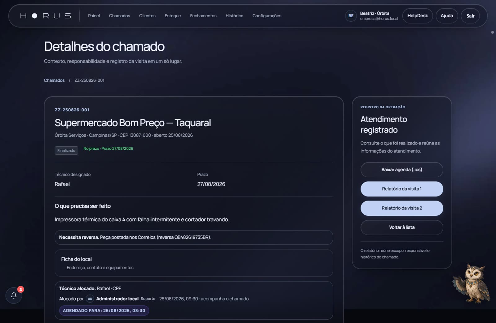
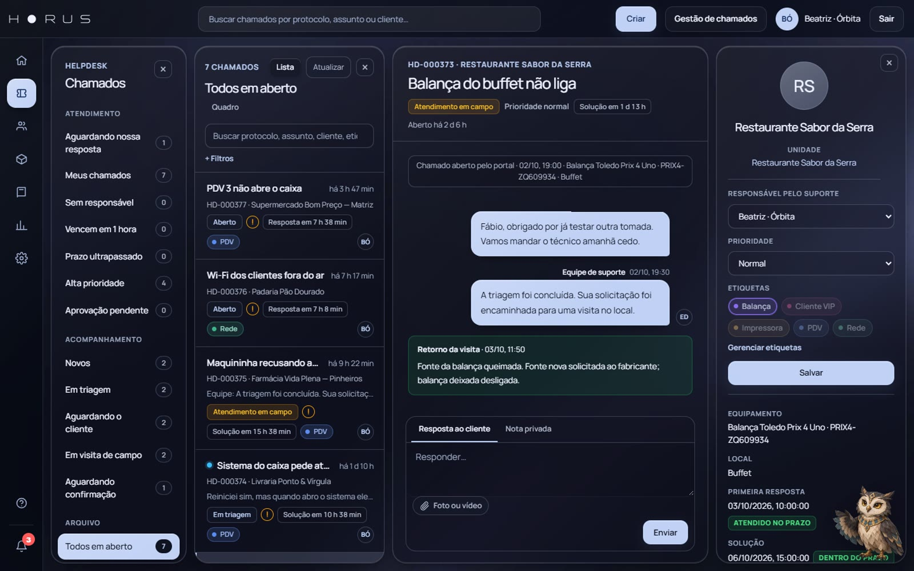
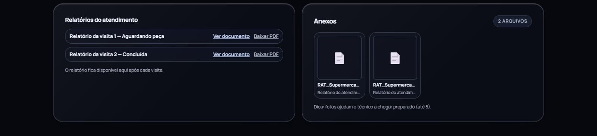
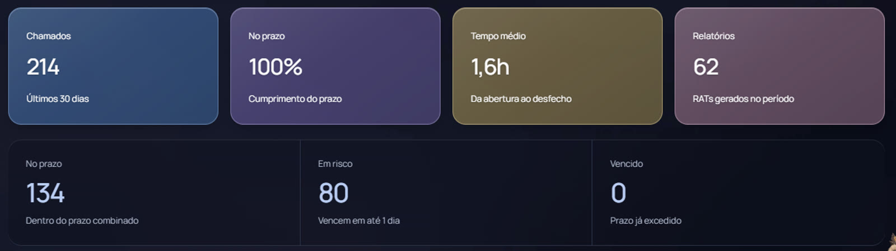
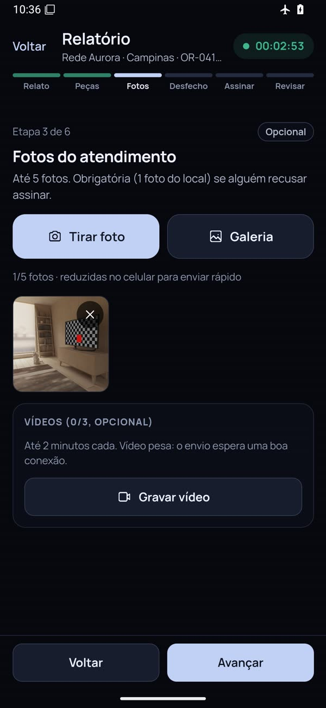
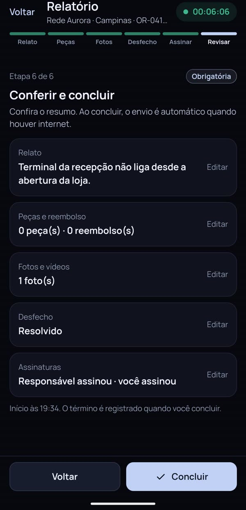
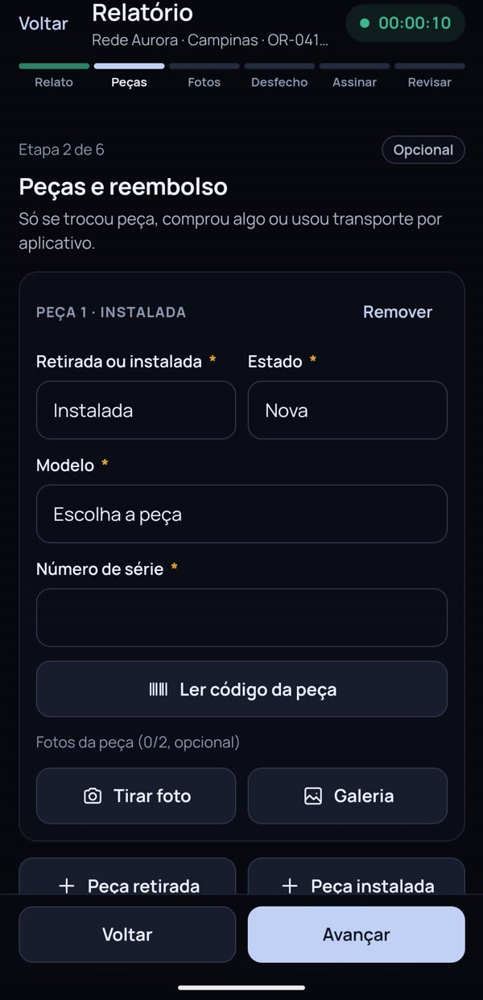
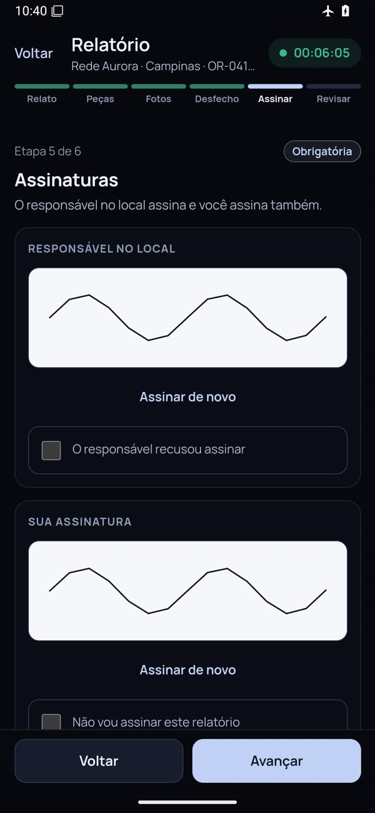
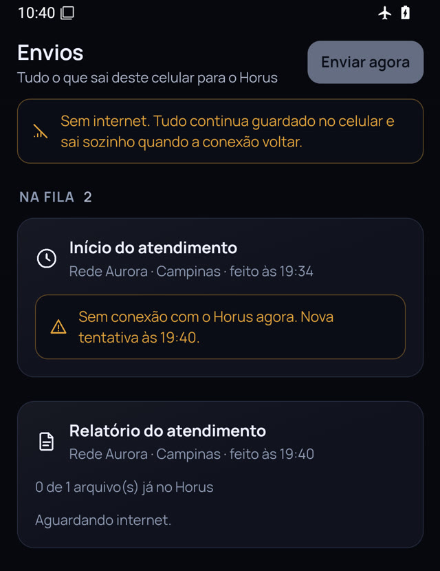
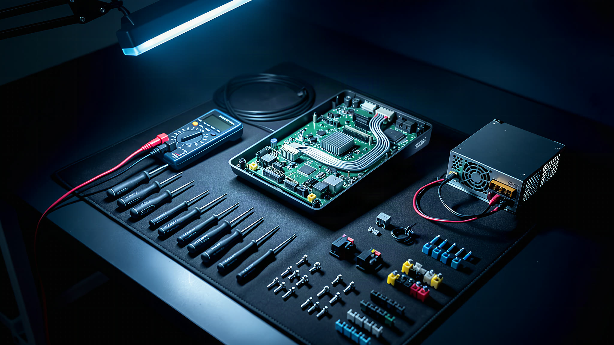

O chamado nasce no grupo de WhatsApp. O status vive na planilha. O relatório chega por e-mail. E a pergunta de sempre vem por ligação.
Como é hoje
Cada canal guarda
um pedaço do chamado.
- 01No grupo de WhatsAppO endereço sumiu no meio da conversa.
- 02Na planilhaA última versão está no computador de alguém.
- 03No e-mailO relatório veio, sem o anexo.
- 04Na ligação"O técnico já foi?" Ninguém sabe ao certo.
Sem um lugar só
O técnico
já foi?
Grupo, planilha, print e ligação. Toda operação com chamado espalhado já fez essa pergunta.
- Marina · Loja 214O técnico já passou aqui? O PDV 03 continua parado.
- Carlos · CoordenaçãoNão sei. Vou ligar para ele.
- Diego · FornecedorQual o status do CH-2470? Preciso do prazo.
- Carlos · CoordenaçãoAlguém tem o relatório da Moema?
- Marina · Loja 214Manda o print da planilha.
- Diego · FornecedorO prazo venceu ontem.
- Carlos · CoordenaçãoJá perguntei três vezes…

Quando ninguém sabe
O prazo
estoura.
Ninguém viu vencer. O chamado só reaparece quando a data já passou.
A loja
para.
O cliente liga, o atendente não sabe responder e o fornecedor pergunta quem vai resolver.
O relatório
some.
A prova da visita fica no celular de alguém, num e-mail sem resposta ou num papel.

A virada
Um chamado.
Um lugar só.
Status, prazo e relatório no mesmo registro: para a sua equipe, para o técnico e para o cliente.
A vida de um chamado
Quem abre vê.
Quem atende registra.
- 01AbertoSua equipe abre.
Cliente, endereço e janela de atendimento entram de uma vez. O prazo começa a contar na hora.
- 02Técnico designadoA NovaSync designa.
Um técnico da região assume o chamado e o aviso chega ao celular dele. Você vê quem vai e quando.
- 03Em atendimentoO técnico executa.
Pelo celular, ele registra o que encontrou, o que fez e as peças que usou. A sua tela muda junto.
- 04ConcluídoO relatório sai pronto.
A RAT é gerada em PDF com os dados do chamado já preenchidos e aparece anexada na sua tela.
- 05FinalizadoFica no histórico.
Chamado encerrado, prazo registrado e relatório guardado. Quando precisar, está lá.






Telas reais do Horus
O chamado de ponta a ponta,
sem sair da tela.

Peça retirada ou instaladaLê o código da peça
Quem recebeu assinaO técnico tambémRelatório de atendimento
A RAT
se monta sozinha.
Os dados do chamado entram no relatório automaticamente. O técnico só confere e completa o que fez.
- Cliente e endereço
- Chamado e prazo
- Serviço executado
- Peças utilizadas
Prazo à vista
Quem vai estourar, você vê antes.
No prazo, vence hoje ou excedido: cada chamado mostra a situação, e o painel soma tudo por período, empresa e estado.
Sem sinal, sem problema
No subsolo, o atendimento continua.
O técnico registra a visita no celular. Quando a internet volta, tudo sobe sozinho para o chamado.

Onde tiver TI,
tem chamado.
- 0técnicos parceiros
- 0estados





Os detalhes
que a operação sente.
O que sustenta o dia a dia de quem abre, acompanha e fecha chamados no Horus.
- 01Prazo em dias úteisDois dias úteis a partir da abertura, pulando fins de semana e feriados nacionais.
- 02Status do prazo à vistaNo prazo, vence hoje ou excedido, sinalizado em cada chamado.
- 03Verificação em duas etapasLogin protegido por um código além da senha.
- 04Cadastro de clientesEndereço estruturado uma vez, reaproveitado em cada chamado novo.
- 05Fechamento semanalOs atendimentos da semana reunidos para conferência e aprovação.
- 06Histórico consultávelChamados finalizados com relatório e peças, prontos para quando alguém perguntar.
Vamos esclarecer.
Quem usa o Horus?
Sua equipe abre e acompanha os chamados. Os técnicos parceiros veem os chamados deles e as peças pelo celular. A NovaSync coordena a operação pelo mesmo sistema.
Preciso instalar alguma coisa?
Não. O Horus funciona no navegador, no computador ou no celular, em app.nova-sync.net.
Como funciona o acesso?
Cada pessoa tem o próprio login, com verificação em duas etapas. Técnicos recebem um e-mail de primeiro acesso, e a senha pode ser recuperada por e-mail.
O relatório segue o modelo que o meu fornecedor exige?
Sim. A RAT segue o modelo do fornecedor configurado para a sua empresa, com os dados do chamado já preenchidos.
E os dados da minha operação?
A NovaSync não vende dados. A política de privacidade do Horus detalha quais dados são tratados, com quem são compartilhados e por quanto tempo.
Veja o Horus
com os seus chamados.
Mostramos a plataforma no fluxo da sua operação: abertura, prazo, técnico em campo e relatório.
Fazer o diagnóstico